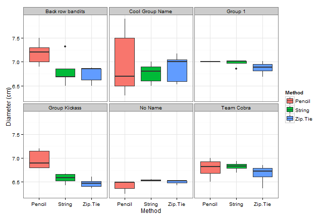
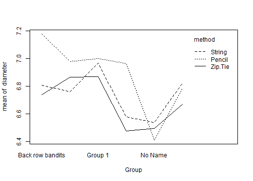
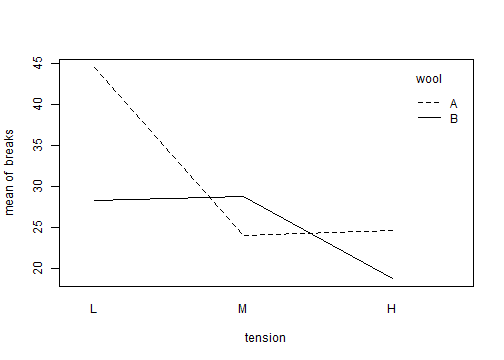
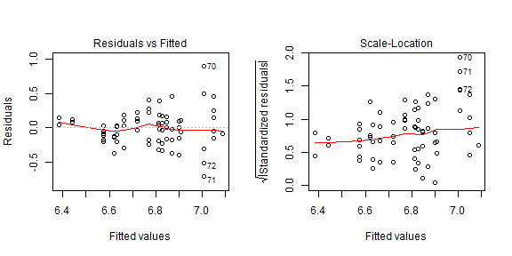
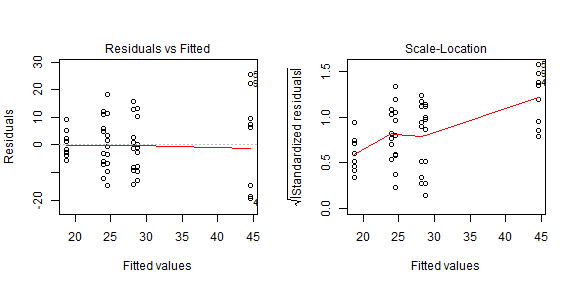
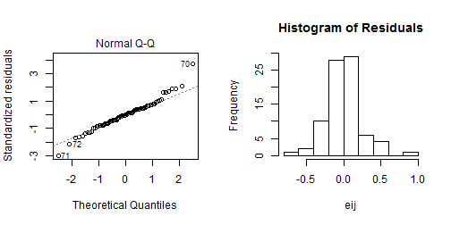
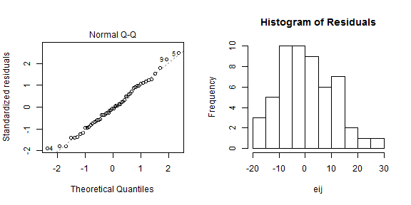

Last semester in Stat 217 six groups collected information on tennis ball diameter using three different methods. Each group measured the diameter using two pencils, a string, and a zip tie. The data are summarized below. We'll use a significance level of 0.05 for all tests on these data.
summary(tennis)
Group method diameter
Back row bandits:15 Pencil :27 Min. :6.250
Cool Group Name :15 String :27 1st Qu.:6.530
Group 1 :12 Zip.Tie:27 Median :6.800
Group Kickass :18 Mean :6.786
No Name : 9 3rd Qu.:7.000
Team Cobra :12 Max. :7.900
Weavers were interested in the number of warp breaks per loom. They used two different types of wool (A or B) and set the looms to one of three different tensions (Low, Medium, or High). The counts in each wool-tension group are displayed below. We would like to find out if any wool-tension combination results in fewer breaks than the others.
require(mosaic)
tally(~ wool + tension, data = warpbreaks)
tension
wool L M H
A 9 9 9
B 9 9 9
Are the warp breaks data balanced?
Looks back at the counts in each wool-tension group
Each wool-tension group consists of 9 looms so the data are balanced.
Separate boxes are given for each method-group combination. The measurements for Cool Group Name have by far the most variability. It appears that the pencil and string measurements have slightly larger diameters than the zip-tie measurements

An interaction plot of the tennis ball data is below. This plot is pretty messy. The lines are not parallel all the way across and they do cross at several places which is suggestive of an interaction. The lines do follow the same general trend though. Overall, I would say this plot does not provide strong evidence one way or another of an interaction. We'll have to do an F test to be sure.
with(tennis, interaction.plot(Group, method, diameter))

The interaction plot for the warpbreaks data are provided below. The different lines correspond to different wool types.
with(warpbreaks, interaction.plot(tension, wool, breaks))

Does the interaction plot suggest that the effect of tension depends on the type of wool? You might want to take a look at the explanation even if you get the question right. I think it's useful.
Take a look back at the interaction plot. Is there a constant shift from wool A to wool B for all levels of tension?
At low tension, wool A has a lot more breaks than wool B. At medium tension, however, wool B has more breaks. Wool A has more breaks once again at high tension. Therefore, the effect of wool A depends on the tension so there is probably an interaction present.
We'll start by fitting a model with an interaction and testing to see if the interaction is needed. The interaction model is:
\(y_{ijk} = \alpha + \tau_j + \gamma_k + \omega_{jk} + \epsilon_{ijk}\)
We'll let the \(\tau_j\)'s be the method effects and the \(\gamma_k\)'s be the group effects.
To test for an interaction, we will test to see if the \(\omega_{jk}\)'s are all zero.
We'll also start with an interaction model for the warpbreaks data:
\(y_{ijk} = \alpha + \tau_j + \gamma_k + \omega_{jk} + \epsilon_{ijk}\)
We'll let the \(\tau_j\)'s be the tension coefficients, the \(\gamma_k\)'s be the wool coefficients, and the \(\omega_{jk}\)'s be the interaction coefficients.
Which null hypothesis tests to see if an interaction is present in the data?
Which coefficients correspond to the interaction?
The \(\omega_{jk}\)'s are the coefficients for the interaction terms. The alternative hypothesis is:
\(H_A:\) at least one \(\omega_{jk}\) is not equal to zero
Here's a sparse ANOVA table for the tennis ball data that has not been filled in.
| id | Df | Sum Sq | Mean Sq | F value | Pr(>F) |
|---|---|---|---|---|---|
| method | \(df_A\) | \(SS_A\) | \(MS_A = SS_A / df_A\) | \(F_{A} = MS_A / MS_E\) | |
| Group | \(df_B\) | \(SS_B\) | \(MS_B= SS_B / df_B\) | \(F_B = MS_B / MS_E\) | |
| method:Group | \(df_{AB}\) | \(SS_{AB}\) | \(MS_{AB}= SS_{AB} / df_{AB}\) | \(F_{AB} = MS_{AB} / MS_E\) | |
| Residuals | \(df_{E}\) | \(SS_E\) | \(MS_E= SS_E / df_E\) | ||
| Total | \(df_T\) | \(SS_{Total}\) |
\(df_A = J-1 = 3-1\)
\(df_B = K-1 = 6-1\)
\(df_{AB} = (J-1) * (K-1) = (3-1) * (6-1)\)
\(df_E = N - (J * K) = 81 - (6 * 3)\)
\(df_{Total} = N-1 = 81 - 1\)
Here's a blank ANOVA Table for a model with an interaction for the warpbreaks data. We'll let tension be factor A and wool be factor B
| id | Df | Sum Sq | Mean Sq | F value | Pr(>F) |
|---|---|---|---|---|---|
| tension | |||||
| wool | |||||
| tension:wool | |||||
| Residuals | |||||
| Total |
The formulas for the degrees of freedom are on the previous slide
2 There are three levels of tension so \(DF_A = 3-1\)
1 There are three levels of wool so \(DF_B = 2-1\)
2 \(DF_{AB} = (J-1) * (K-1) = (3-1) * (2-1)\)
48 \(DF_{E} = N - J*K = 54- 3*2\)
53 \(DF_{Total} = N-1 = 54-1\)
Here's the updated ANOVA table with a few numbers added to it. We can fill in the rest of the SS and MS values.
| id | Df | Sum Sq | Mean Sq | F value | Pr(>F) |
|---|---|---|---|---|---|
| method | 2 | 0.84 | \(MS_A = SS_A / df_A\) | \(F_{A} = MS_A / MS_E\) | |
| Group | 5 | \(SS_B\) | 0.340 | \(F_B = MS_B / MS_E\) | |
| method:Group | 10 | \(SS_{AB}\) | 0.076 | \(F_{AB} = MS_{AB} / MS_E\) | |
| Residuals | 63 | 3.83 | \(MS_E= SS_E / df_E\) | ||
| Total | 80 | \(SS_{Total}\) |
\(SS_B = MS_B * df_B = 0.340*5 = 1.7\)
\(SS_{AB} = MS_{AB} * df_{AB} = 0.076 * 10 = 0.76\)
\(SS_{Total} = SS_A + SS_B + SS_{AB} + SS_E = 7.13\)
\(MS_A = SS_A / df_A = 0.84/2 = 0.42\)
\(MS_E = SS_E / df_E = 3.83 / 63 = 0.061\)
A few numbers have been added to the warpbreaks ANOVA table as well. We'll try and fill in the rest of the table.
| id | Df | Sum Sq | Mean Sq | F value | Pr(>F) |
|---|---|---|---|---|---|
| tension | 2 | 2034.3 | \(MS_A\) | ||
| wool | 1 | 450.7 | \(MS_B\) | ||
| tension:wool | 2 | \(SS_{AB}\) | 501.39 | ||
| Residuals | 48 | \(SS_E\) | 119.69 | ||
| Total | 53 | \(SS_{Total}\) |
Fill in the following values. Round all answers to 2 decimal places.
The formulas are on the previous slide
The F-statistics for each of the three rows are just the \(MS\) for that row divided by the \(MS_E\).
| id | Df | Sum Sq | Mean Sq | F value | Pr(>F) |
|---|---|---|---|---|---|
| method | 2 | 0.84 | 0.418 | \(F_{A} = MS_A / MS_E\) | |
| Group | 5 | 1.7 | 0.340 | \(F_B = MS_B / MS_E\) | |
| method:Group | 10 | 0.760 | 0.076 | \(F_{AB} = MS_{AB} / MS_E\) | |
| Residuals | 63 | 3.83 | 0.061 | ||
| Total | 80 | 7.13 |
\(F_A = 0.418 / 0.061 = 6.88\)
\(F_B = 0.340 / 0.061 = 5.57\)
\(F_{AB} = 0.076 / 0.061 = 1.25\)
Here is the current ANOVA table for Warpbreaks data. Next we'll fill in the F-statistics
| id | Df | Sum Sq | Mean Sq | F value | Pr(>F) |
|---|---|---|---|---|---|
| tension | 2 | 2034.3 | 1017.15 | ||
| wool | 1 | 450.7 | 450.7 | ||
| tension:wool | 2 | 1002.78 | 501.39 | ||
| Residuals | 48 | 5745.12 | 119.69 | ||
| Total | 53 | 9232.9 |
Fill in the following. Round to two decimal places.
The formulas are given two slides ago
The F-statistics still follow an F distribution. The numerator degrees of freedom is the df on the same row as each statistic. The denominator degrees of freedom is the Residual df (\(df_E\)). We compare the observed F-values to these named distributions to find a p-value.
| id | Df | Sum Sq | Mean Sq | F value | Pr(>F) |
|---|---|---|---|---|---|
| method | 2 | 0.84 | 0.418 | 6.88 | |
| Group | 5 | 1.7 | 0.340 | 5.59 | |
| method:Group | 10 | 0.15 | 0.076 | 1.25 | |
| Residuals | 63 | 3.83 | 0.061 | ||
| Total | 80 | 7.13 |
Formally:
\(F_A \sim F(2, 63)\)
\(F_B \sim F(5, 63)\)
\(F_{AB} \sim F(10, 63)\)
We start by first examining the method:group row. This row tests to see if there is an interaction present between Group and method.
The F-statistic is 1.25. This test statistic follows an F distribution with 10 numerator and 63 denominator degrees of freedom. This yields a p-value of 0.28. We therefore fail to reject the null and conclude that the differences in diameter measurements do not vary across the groups (i.e. we conclude that there is not an interaction effect in the data).
tennis1 <- lm(diameter ~ method + Group + method*Group, data = tennis)
anova(tennis1)
| Df | Sum Sq | Mean Sq | F value | Pr(>F) | |
|---|---|---|---|---|---|
| method | 2 | 0.837 | 0.418 | 6.882 | 0.002 |
| Group | 5 | 1.700 | 0.340 | 5.594 | 3e-04 |
| method:Group | 10 | 0.758 | 0.076 | 1.247 | 0.2798 |
| Residuals | 63 | 3.830 | 0.061 |
Here is the completed ANOVA table for the Warpbreaks data.
warp.lm <- lm(breaks ~ tension + wool + tension*wool, data = warpbreaks)
anova(warp.lm)
Analysis of Variance Table
Response: breaks
Df Sum Sq Mean Sq F value Pr(>F)
tension 2 2034.3 1017.13 8.4980 0.0006926
wool 1 450.7 450.67 3.7653 0.0582130
tension:wool 2 1002.8 501.39 4.1891 0.0210442
Residuals 48 5745.1 119.69
Which null hypotheses is being tested by the wool:tension row of the ANOVA table? Make sure that you know what the alternative hypothesis is.
Which Greek coefficient corresponds to an interaction?
The \(\omega\)'s are used to represent the interaction effect. So we want to test to see if they are equal to zero. The alternative hypothesis is
\(H_A:\) at least one \(\omega_{jk} \neq =\)
Based on the ANOVA table, is there evidence of an interaction between wool and tension at the \(\alpha = 0.05\) significance level?
Check the p-value testing whether there is an interaction
The p-value testing for an interaction is 0.021 so we reject the null of no interaction and decide that there is an interaction present.
Since we did not find any evidence of an interaction, the next step is to fit an additive model. In this model, we say that \(y_{ijk} = \alpha + \tau_j + \gamma_k + \epsilon_{ijk}\). The ANOVA table for this model is displayed below. This table uses Type II Sums of Squares so we can test both factors simultaneously.
require(car) # for Type II sums of squares
tennis2 <- lm(diameter ~ method + Group, data = tennis)
Anova(tennis2)
Anova Table (Type II tests)
Response: diameter
Sum Sq Df F value Pr(>F)
method 0.8367 2 6.6569 0.0022099
Group 1.7002 5 5.4107 0.0002744
Residuals 4.5877 73
We'll use the additive model model where the \(\tau_j\)'s are the method (string/ziptie/pencil) coefficients and the \(\gamma_k\)'s are the coefficients for different groups. The method row tests whether the \(\tau_j\)'s are equal to zero (i.e. whether the different methods result in different diameters).
What null hypothesis is being tested by the p-value in the Group row?
Which coefficients correspond to the different groups?
The \(\gamma_k\)'s are the coefficients for the different methods so the method row tests to see if they are zero.
To check equal variance, we look at residual vs fitted value and scale-location plots as before. Once again, we are looking for any sort of pattern. You could claim there's evidence of a fan shape in the residuals vs fitted values plot, but that's mostly driven by point 70 which is an outlier (we'll learn how to deal with them later). Otherwise, the assumption appears to be okay. These plots are strange so ask me if you are confused.
par(mfrow=c(1,2))
plot(tennis2, which = c(1,3))

Here are the Residuals vs Fitted values and Scale-Location plots for the warpbreaks data.
par(mfrow=c(1,2))
plot(warp.lm, which = c(1,3))

For which data set does the equal variance assumption appear to be more problematic?
Do you notice any patterns in the warpbreaks plots?
There is an increasing trend in the Scale-Location plot for the warpbreaks data. The residuals for the small fitted values in the warpbreaks data are all between -10 and 10; for the larger fitted values, however, the residuals range from -20 to 30. So there is probably non-constant variance in the warpbreaks data.
We can use Normal Q-Q plots and a histogram to assess normality once again. Except for observations 70 and 71, the points fall really close to the dashed lines. This suggests that these points are potential outliers. The histogram looks unimodal and reasonably symmetric. So these plots suggest that the normality assumption is met.
par(mfrow = c(1,2))
plot(tennis2, which = 2)
eij <- resid(tennis2)
hist(eij, main = "Histogram of Residuals")

Here are the Residuals vs Fitted values and Scale-Location plots for the warpbreaks data.
par(mfrow=c(1,2))
plot(warp.lm, which = c(2))
eij <- resid(warp.lm)
hist(eij, main = "Histogram of Residuals")

Which data set seems to have more of a problem with the normality assumption?
Recall that we have a fairly large sample size and a balanced design for the warpbreaks data.
The Normal Q-Q plot looks okay for the warpbreaks data. The histogram appears to be slightly skewed right, but we have a large sample size and a balanced design so it's not too big of a problem.
These questions are not required, but you should try to figure them out anyway.
When looking at an interaction plot, what would suggest that an interaction is present?
Even though we won't do multiple comparisons here, you can still look at the plots to attempt to answer the question of interest: does it appear that any wool-tension combinations resulted in fewer breaks?
What are the distribution of the F-statistics for the warpbreaks data? ANOVA Table for Tennis Ball Data Part 4 is where I state the distribution for the Tennis Ball data.